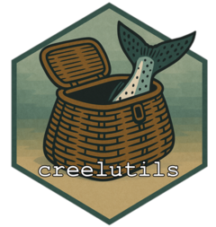

Format catch groups as YAML param strings
Source:R/catchgroups_to_params.R
catchgroups_to_params.RdAdds a param_string column to a catch groups tibble, formatting each row
as a c(species = '...', life_stage = '...', fin_mark = '...', fate = '...')
string suitable for pasting into the est_catch_groups YAML param of a
CreelEstimates script.
Composite catch groups (e.g. Adult|Jack, AD|UM|UNK) are preserved
literally — one row in equals one param_string out.
Typical workflow: pipe the output of fishery_catchgroups_obs() through
this function with print = TRUE to emit the comma-separated rows to the
console, then paste between the rbind( and )) of the script's
est_catch_groups YAML param.
Arguments
- data
A tibble with
species,life_stage,fin_mark, andfatecolumns, typically the output offishery_catchgroups_obs()orfishery_catchgroups().Logical. If
TRUE, printsparam_stringvalues to the console separated by,\n(ready to paste into a YAML param) and returns the tibble invisibly. DefaultFALSE.
Value
The input tibble with an appended param_string character column.
Returned invisibly when print = TRUE.
Examples
if (FALSE) { # \dontrun{
con <- connect_creel_db()
dwg <- fetch_dwg("Skagit fall salmon 2025")
# Print to console for copy-paste into est_catch_groups
fishery_catchgroups_obs(con, dwg) |>
catchgroups_to_params(print = TRUE)
} # }